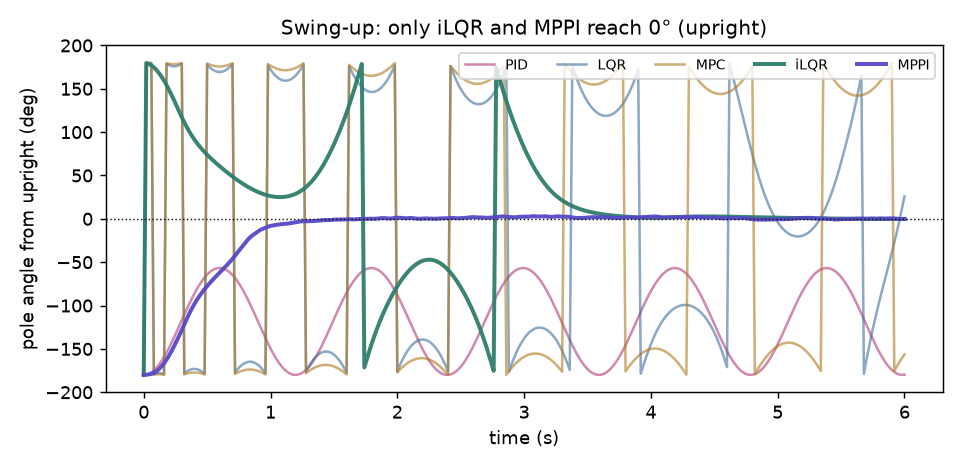

The same nonlinear plant — a pole on a cart — run under five controllers, from a hand-tuned PID up to sampling MPC. Two tasks: stabilize the pole upright, and the hard one, swing up from hanging. Each is really run; each shows its own failure or tradeoff; each links to the 2025 paper that uses it.
One rule runs through the family: match the controller to the problem's nonlinearity. Linear feedback (PID, LQR, linear-MPC) stabilizes near a setpoint but cannot execute a large motion; the swing-up needs the real nonlinear model — solved by trajectory optimization (iLQR/DDP) or by sampling (MPPI).

| method | stabilize upright | swing up from hanging |
|---|---|---|
| PID classical feedback | ✗ topples | ✗ |
| LQR linear-optimal | ✓ holds | ✗ |
| MPC receding-horizon | ✓ holds | ✗ |
| iLQR / DDP nonlinear trajectory optimization | — | ✓ swings up |
| MPPI sampling MPC | — | ✓ swings up |
A single feedback loop on one signal: push in proportion to the pole's tilt (and its rate). No model, no notion of the cart.
It balances the pole briefly, but with no cart feedback the cart accelerates 172 m away and the pole topples (1.423 rad). And it never swings up.
Linearize about upright and solve for the optimal linear feedback (the Riccati equation) — one gain over the full state, cart and pole together.
Stabilizes upright cleanly (0.004 rad, cart drift 0.02 m). But the linear model is only valid near upright, so swing-up fails (0.975 rad).
Re-solve a short-horizon optimal-control problem every step, so it can respect hard limits (here, a bounded actuator force) that LQR ignores.
Stabilizes upright within the force limit (0.005 rad). With a linear model it still can't swing up (2.713 rad).
Iterative LQR: repeatedly linearize the nonlinear dynamics along the trajectory and improve it with a backward Riccati pass and a forward line search — differential dynamic programming.
Solves the full nonlinear problem: it pumps energy and drives the pole all the way to upright — swing-up succeeds, final angle 0.007 rad (≈0°).
Model-predictive path integral: each step sample hundreds of random control sequences, roll them out through the nonlinear model, and take a cost-weighted average — no gradients at all.
Swings up and balances by sampling, closed-loop, with no derivatives — final angle 0.007 rad (≈0°).
scripts/controller_zoo_experiments.py, pure-NumPy RK4), five controllers each run on both tasks; the figure and every number come straight from that run.